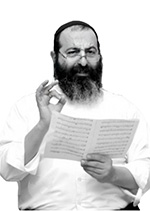

Six Stories of Forgiveness
Sometimes there are things that cause us problems and we don’t know the reason why we must experience the challenges. We often are forced to search our hearts: perhaps we have done an offense against one of our fellow Jews – all of whom are on the level of “children of Hashem, your G-d.” Offending a
Translated by Michoel Leib Dobry

Recently, during a series of lectures by Rabbi Amram Moyal from the Chabad community of Tzfas, he revealed a chain of six successive stories of forgiveness. “It was simply amazing,” he said with much emotion. “I told those who came to the shiur about the story that I had heard the night before during another Torah class in another city. Lo and behold, one day after another, someone participating in the class identified with the story and began telling his own story or something that he personally experienced, related to this theme.”
Rabbi Moyal heard the first story at a remote settlement in northern Eretz Yisroel. It’s a well-known story that has been publicized at Chabad functions on numerous occasions, but it eventually served as the opening link in a chain of stories.
FORGIVENESS NOT OF THIS WORLD
“Whenever we conclude a Torah class, I sit together informally with a few people. They start to ask more questions, as they identify with the subject matter, thereby increasing their sense of awareness. As a result, they began to tell personal stories. While the first of these classes didn’t deal with the subject of forgiveness, it turned out that one of the participants had apparently just heard the following story, and she decided to share it with everyone.
“The story took place in Eretz Yisroel many years ago. A couple that had been married for several years still did not have any children, and they were reaching the point of despair.
“One day, one of the woman’s friends suggested that she turn to the Lubavitcher Rebbe for advice. The woman agreed, and she immediately wrote a letter to the Rebbe, explaining the reason for her anguish and requesting a bracha. In the reply she received, the Rebbe asked her to check whether she may have previously offended someone in the process of looking for a shidduch. If such was the case, she should ask for his forgiveness.
“The Rebbe’s words jarred her memory, and she suddenly recalled a young man who had been hurt when their shidduch had broken off. Many years had passed since then, and she had totally forgotten about the whole incident.
“The woman accepted the Rebbe’s advice without hesitation, and she set out to find this young man. While she still remembered where he lived, the search would not be so simple. When she arrived in the old neighborhood, she saw that nothing had remained the same. Old buildings had been torn down and apartment buildings had taken their place. The roads had been paved over and renovated, and it seemed as if the entire community had changed. She spent much time walking through the local streets, going from building to building, checking the names on the front doors in the hope that she could find’s the young man’s family. However, nothing turned up.
“After a lengthy search, she suddenly noticed a man sitting calmly on one of the park benches. Despite the many years that had passed, she recognized him immediately. She went up to him and asked him what his name was. Once it became clear that this was the young man, she introduced herself, explaining her problem and the instruction she had received from the Lubavitcher Rebbe. With tears in her eyes, she asked for his forgiveness. The man remembered her well, and he agreed to forgive her. She felt as if a huge weight had been lifted off her shoulders, and she returned home with a great sense of relief.
“The Rebbe’s bracha came to pass within the year. Just ten months later, the woman and her husband were blessed with the birth of a baby boy. They were overjoyed. At the bris mila ceremony, they invited many of their relatives and close friends from far and wide. They all had felt their pain and disappointment over the years, and now they joined in celebrating this moment of great happiness. During the festive meal, the mother asked if she could say a few words. She proceeded to relate what she had gone through over the past several years and about the Rebbe’s amazing answer.
“Among those present was the shadchan who had not only arranged the match between the happy new parents, but he had also made the first shidduch which eventually broke off. When he heard about how she had asked the first young man for forgiveness, he got up from his chair, totally flustered.
“‘Are you positive that you met that young man?’ the shadchan asked skeptically.
“‘Yes,’ the mother replied in a tone of absolute certainty. ‘There can be no mistake. It was him. I remembered him quite well.’ The shadchan then turned to those assembled and asked if he could say something. His voice was trembling, and his face was white as a sheet.
“‘You should all know that the young man to whom she is referring passed away several years ago.’
“All those in attendance sat in stunned disbelief. No further explanation was necessary…”
PROPHETIC VISION
As the shiur participants tried to absorb the magnitude of what they had just heard, Rabbi Moyal took the opportunity to sharpen the message of how much we have to show respect for our fellow Jews. He began to tell them a story that he had recently heard first-hand during a visit to the Rebbe MH”M for the Tishrei holidays.
“During this past Sukkos, I stayed with a well-respected family in Crown Heights. Chassidim naturally were sitting together in the sukka and giving over Divrei Torah. Then, each of them recalled their own special moments with the Rebbe, and the miracles their family personally experienced.
“Rabbi Moyal’s host then stood up and said, ‘Listen, I have a story to tell you, one that I experienced first-hand with the Rebbe.’
“He told how he and his wife had gone for many years without having any children. They tried everything. They went to the biggest experts in the field for treatment, but the results were always disappointing. While all their neighbors and friends had one child after another, they remained in their solitude.
“As is customary among Chassidim privileged to live in ‘Sh’chunas HaMelech,’ they regularly submitted letters to the Rebbe’s secretariat in request of a bracha for children, but they never received an answer. Their hopes to become parents continued to diminish. Oddly enough, whenever they wrote to the Rebbe on different subjects, they got detailed responses. Not so regarding the bracha they longed to receive more than any other…
“Once when they were privileged to go in for a private yechidus, the Rebbe again gave a reply to all their questions – except that one. The wife suddenly began to cry bitterly, even daring to ask the Rebbe, ‘Why? What have we done? If we have sinned, may the Rebbe instruct us on a path of t’shuva!’ The Rebbe’s holy face became very serious. Then, he replied that there’s a certain spiritual obstacle due to the fact that one of them had committed an offense against another Jew.
“The couple left Gan Eden HaElyon totally confused and bewildered. Who could this possibly be? To whom was the Rebbe referring? They felt that the Rebbe was placing the ball in their hands. They sat for several hours, racking their brains and trying to remember events from years past when they might have offended someone…
“Finally, the husband remembered something, and it all came back to him. He recalled that when he was a yeshiva bachur learning in 770, he and several of his fellow students traveled to Canada to participate in their friend’s wedding. Another passenger on the bus was a Chassidishe bachur, who was very stringent in his mitzvah observance, devoting all his time to his davening and his Torah study. The trip back from Canada took place at night. Before this bachur fell asleep as everyone else did, he made certain to prepare negel vasser, so he could wash his hands as soon as he woke up.
“Then, our hero decided to have a little fun and play a trick on him. After this bachur had finally fallen asleep, he took the negel vasser set and hid it. The bus eventually pulled in to a station to give passengers a chance to stretch their legs, and everyone woke up and got out to refresh themselves from the long journey. When this bachur also woke up, he was surprised to discover that his hand washing set was missing. He began to call out for them to give the set back, but since he wouldn’t talk before washing, he starting to say ‘Nu…nu…’ very loudly. The other bachurim laughed in ridicule.
“The driver told the bachurim to stop all the nonsense. The central figure in our story got his friends to give the set back.
“The hurt young man went over to him and said bitterly, ‘I won’t forgive you – in this world or in the World to Come.’
“Now, as he and his wife were trying to determine what the Rebbe meant, he suddenly recalled the incident and the bachur’s angry words.
“He came to 770 the very next day, looking for this bachur, who had since matured but was still unmarried. When he found the bachur, he asked him if he remembered the story.
“‘Of course, I remember,’ he replied sharply. ‘I told you then that I wouldn’t forgive you, and I still won’t forgive you now.’ It was quite clear that the hurt feelings had not lessened since then.
“‘Look,’ my host told him with much pain, ‘I’ve been married now for several years, and my wife and I still do not have any children. We are simply beside ourselves with anguish. We had a yechidus with the Rebbe this week, and he suggested that we ask you for forgiveness. If you can’t do this for me, at least do it for my wife.’
“‘If this is what the Rebbe wants, then I forgive you,’ the now mature young man finally agreed.
“That same year, the couple was blessed with the birth of their only son. At the bris mila ceremony, they were joined not just by close friends and family, but also by many members of the community who shared in their great joy.
“The couple had always preferred to keep this story to themselves and not publicize it. The host said that this was one of the rare occasions when he has agreed to tell so many people about this incredible and amazing miracle.”
FORGIVENESS LAID RIGHT OUT ON THE TABLE
The following day, Rabbi Moyal made his way to North Tel Aviv to give over a Torah class. There too, after completing his shiur, he decided to tell the participants about the two stories he had heard and told the day before.
“When I finished speaking, one of the women there asked if she could relate her own story of a similar nature. ‘This is exactly what happened to me,’ she said in a voice filled with emotion, as everyone perked up to listen.
“She introduced herself as a young woman, not yet forty years old. For a period of several years since she began to follow the path of Torah observance, she had been looking for a shidduch without success. There was no logical reason for the failure she had encountered thus far. She is a very intelligent, talented, and attractive woman. Her friends tried to find a suitable match for her, various shadchanim were enlisted, but nothing seemed to help. She remained alone.
“Her brother and sister, who had previously established their connection with the teachings of Chassidus and the Rebbe, Melech HaMoshiach, had already married and raised proper Chassidishe families. It pained them deeply to see their grown sister, seeking unsuccessfully to build a family unit of her own. They urged her to write to the Rebbe and request his bracha. She didn’t understand how the Rebbe could possibly help her. At first, she tried to ignore their advice, but as time passed and their urging grew more persistent, she eventually agreed to write to the Rebbe about her emotional misery and suffering.
“After making some appropriate good resolutions, she placed her letter in a volume of Igros Kodesh in her brother’s home. In the Rebbe’s answer, he wrote that she had to ask forgiveness from another Jew. Her brother said that she should try and remember if she had perhaps offended someone in the past, and if this was true, she should ask that person to forgive her.
“After considering the matter long and hard, she suddenly remembered about a young man who had apparently been hurt by her. ‘But where could I find him now?’ she thought to herself. When she finally told her brother about it, he replied with pure Chassidic faith, ‘Just as the Rebbe wants you to ask forgiveness, he’ll make certain that you’ll find this person.’
“In her youth, she had met a certain young man who had agreed to marry her as a way for her to avoid military service. The wedding was conducted in full accordance with Halacha, and once she obtained her army exemption, she left the house and told him that she wanted a divorce. The young man was not only stunned; he was deeply hurt and insulted. While he eventually gave her a get, his anguish was almost unbearable. Twenty years had passed since then, and she had neither seen nor heard from him since.
“The day after requesting the Rebbe’s bracha, she was sitting in a coffee house on Tel Aviv’s Sheinkin Street, thinking about the Rebbe’s answer and her former husband. Suddenly, she turned around and saw someone familiar sitting at an opposite table. Before she had a chance to recall from where she knew him, he called her by name and said that he was her ex-husband… She was shocked. Her voice was trembling and she couldn’t say a word at first.
“‘You won’t believe it,’ she finally managed to blurt out. After she had recovered from the shock, she told him about everything that had happened to her and about the Rebbe’s recent answer. She eventually asked him to forgive her.
“He told her that he had been deeply hurt and upset for a long time, but as time passed, he eventually got over it, remarried, and began a new life.
“He accepted her apology and forgave her, wishing her much happiness and success in her own life.
“Just a few weeks later, this woman met her future husband. They were married, and today they have two beautiful children.
“The woman who experienced this herself told the story at the conclusion of the shiur. No one could remain indifferent after that,” Rabbi Moyal noted, “and I had yet another forgiveness story…”
HE APPEARED IN A DREAM WITH A COLD AND ESTRANGED LOOK
“The next day, I gave a class at the Machon Alte Institute in Tzfas. This is a learning institution for baalos t’shuva, where young women who have begun to follow the path of Torah come from all over the world to study concepts in traditional Judaism. As in the previous settings, after completing the shiur, I proceeded to tell the stories I had heard over the past week. These stories made a powerful impression.
“By then, I was no longer surprised when one of the students asked if she could relate a similar incident that she had experienced first-hand.
“I know this student well. She regularly participated in my classes at one of the settlements near the Sea of Galilee. She eventually came closer to her Jewish roots, and when she decided to focus more intensely on her growth in Yiddishkait, she came to learn in a Chabad institution in Tzfas.
“She said that when she began her kiruv process, she cut off all contact with a young man who did not agree to follow along the path she had chosen. She hadn’t heard from him since, and she didn’t know what had happened to him. In the meantime, she continued on her spiritual journey, but not without difficulties. While it took much longer than just a few days or weeks, she remained consistent and unyielding until she decided to take on a Torah observant lifestyle in every respect. In this way she came to Machon Alte.
“One night, as she slept in the dormitory, she dreamt that this young man was staring at her with a cold and estranged look. She woke up very frightened. Her fear was intensified, because the young man had recently passed away from a terminal illness. She decided to consult with one of the rabbanim at Machon Alte to determine what she should do and how to respond to this strange dream.
“The rabbi suggested that she ask for his forgiveness. To do this, she got three men to serve as a Beis Din and she asked his soul to forgive him. The men said three times, ‘You are absolved, you are absolved, you are absolved.’ That night, he came to her in a dream once more, but this time he smiled and said ‘Hello.’ From that moment, she felt that the forgiveness had put an end to this story.
“When I came the next day to a seminar somewhere in northern Eretz Yisroel sponsored by the M’Maal Mamash Institute, I retold all these stories. Once again, one of the participants got up and recounted a similar experience. She had angrily broken her relationship with a young man after a serious quarrel with him, and neither of them had been privileged to bond with anyone else since then. Then one day, a third party became aware of the whole story, and helped them to reconcile and forgive one another. Not long afterwards, each of them got married…”
A SENSITIVE HEART
Later that week, Rabbi Moyal heard the last of these stories when he came back to Tzfas. “This was at a Melaveh Malka held in the presence of mashpiim and rabbanim. This subject came up again and created a powerful reverberation among all those present. Everyone there soon began to ask forgiveness from the people seated near them.
“One of those participating in this farbrengen was a young man. He had been deeply moved after I had retold the stories I had recently heard, and he later gave me a personal account of a similar story that he had experienced.
“This young man was in his late twenties. He had been married for a few years, but he and his wife had not yet been blessed with children, while his friends had long since become parents. One day, he began to feel sharp pains in his chest. He became very concerned, and he quickly went to the doctor at his local health clinic to determine the reason for these pains. The doctor arranged a series of comprehensive tests, and the results showed that he apparently needed to undergo surgery.
“As a preparation for the surgical procedure, he was sent for an even more comprehensive examination. It’s no wonder that he and his wife were very troubled. Heart problems are usually detected in people over the age of fifty, whereas he was still a very young man. Fear and concern only added to the feeling of pressure and pains in his chest. Before going for his scheduled exam, his wife decided to write to the Rebbe via Igros Kodesh. In his reply, the Rebbe wrote about the need to ask forgiveness from a Jewish woman.
“She brought the answer to her husband, and he told her that during his previous shidduch, he had offended the young woman involved. However, she had offended him as well, and as a result, he had made no effort thus far to apologize to her. Even now, he felt that he couldn’t possibly pick up the phone to call her. Yet, his wife, a true woman of valor, got the young lady’s phone number and made the call herself. She asked forgiveness on her husband’s behalf, and when she finished speaking, she could hear the woman crying on the line.
“It turned out that this woman had been looking for a shidduch for a long time without success. Every time she wrote to the Rebbe and asked for a bracha, the answer dealt with the need to ask forgiveness. The answer varied with each request, but the message remained the same. She knew exactly who the Rebbe meant. One day, she had decided to break the shidduch after everything was well underway, but she never had the courage to call him and ask for forgiveness. Now, she was delighted that it would all come to a peaceful conclusion.
“The young man had the more comprehensive examination, but the results showed that everything was normal. The doctors concluded that the chest pains were due to pressure or an improper diet. That same year, the couple celebrated the birth of their first child. As for the other young woman, she found her bashert within a matter of weeks and established a Chassidishe home on the foundation of Torah observance and hiskashrus to the Rebbe, Melech HaMoshiach.
“Sometimes, such situations come forth from Heaven in order to bring the long-awaited results,” says Rabbi Moyal. “This young man had to go through weeks of pain and worry to close the circle of forgiveness, thereby opening a path to an abundance of brachos for him and for the woman to whom he was once engaged.”
KNOWING TO FORGIVE
Rabbi Moyal asked if he could conclude this fascinating series with a clear message:
“Sometimes there are things that cause us problems and we don’t know the reason why we must experience the challenges. We often are forced to search our hearts: perhaps we have done an offense against one of our fellow Jews – all of whom are on the level of “children of Hashem, your G-d.” Offending another Jew is no small matter – he is the King’s son.
“Many people reading this may think that it has no relevance to them. However, in reality, the Rebbe has mentioned this matter on numerous occasions in his letters and sichos. Furthermore, we see clearly how asking for forgiveness removes obstacles and opens new channels.”
Nosson Avrohom. "Six Stories of Forgiveness." Beis Moshiach, no. 862 (December 27, 2012).